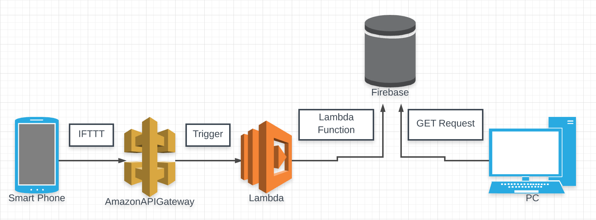

This post continues a previous entry. But bringing everyone up to speed—
I am traveling, and want the About page of this website to programatically say where I'm living. The plan is to post my location every hour to a remote database. When someone visits the page, a client-side GET request is made to the database and JS will fill in the City and State on the page.
The challenging part is posting my location.
I couldn't easily figure out how to do this from my phone,
so I set it up to run from my laptop
(using a Ruby script called with cron).
It worked, but there were two major drawbacks. 1. My computer is not always on. 2. My computer is not always with me. Therefore, my location wasn't very accurate.
I put this project on hold for a few months. But I recently revisited it and now having it working using my phone's location!
A friend1 told me that IFTTT (mobile app) can run web requests on timed intervals. When I heard this, I thought I'd have my location posting from my phone within an hour.
Unfortunately, IFTTT is not very robust2. It doesn't allow the chaining of "recipes" and I couldn't figure out a way to calculate a parameter and pass it with a request.
I wanted to directly make a POST request to the database (Firebase). But there was no way to determine the city and state or longitude and latitude and include that with the request3.
As a result, I thought I could keep the IFTTT request and get the mobile location from the IP address of the request.
As a way to think about it, I'd make a simple request to a remote endpoint every hour. The application behind the endpoint would run some logic to determine the physical address from the IP. Then it would post that information to the database.
But instead of an application, I'd use Serverless Architecture!
Serverless is all the rage these days, and I'd been looking for an excuse to play with it. Serverless is also known as 'Backend as a Service' and 'Function as a Service' and 'NoOps'4. The best explanation I've read is available on Martin Fowler's website.
This seemed like the perfect use-case for Serverless. The idea is—it's wasteful to run an entire application to do one thing. AWS offers a service Lambda.
The way Lambda works is that whenever it is "triggered" it executes a function. The advantages are—
I won't go deep into the details, but I set up an API Gateway for the trigger event. Whenever the endpoint is hit, it runs the function on Lambda. The code for the function is available in a Gist 5.
This function does three things. It gathers the important information: datetime and IP address. It transforms the IP address into a city and state. It posts that information to the remote database.
Believe it or not, this all worked. I was feeling so pleased with myself, I created a diagram.
Unfortunately, there is one major problem. It is not possible to determine a physical location from an IP address when connected to the wireless mobile internet.
This works end-to-end with the phone connected to WiFi. But when I was connected to the mobile web, my IP address always had me in Virginia 😃 6.
I decided, fundamentally, that trying to transform an IP into a location was a mistake. I needed to get the physical location from the phone itself.
I did some google research for "How to share my location with an Android phone". Sure enough, you can just change certain privacy settings and share your exact location with the world on Google+.
Once I was sharing my location on Google+, I just needed to: scrape the page every hour, grab the location, and post it to the remote DB.
For visiting the page, I used Watir because it looked popular and let me write Ruby. The code is available in a Gist.
Watir runs a real web browser, so it's easy to click and type and sleep as necessay 7.
I got this working quickly on my local computer, but there were a few gotchas when moving the script to a server. 1. Watir needs to run headless, because a server cannot open GUI Chrome. 2. You can use any web browser, but you need to install it and the driver 8.
I'm happy to have this working. My location really does make it from my phone to my About page. When I drove from Memphis to Austin, I kept checking and it was fun to see that I lived in "Marion, Arkansas", "Gurdon, Arkansas", "Texarkana, Arkansas", "Lancaster, Texas", throughout the day.
There is one last thing I don't want to gloss over: privacy. My solution only works because I am publicly sharing my exact location. This doesn't bother me; in fact, I like it9. But I highlight it to say that this definitely doesn't work for everyone and there is a sacrifice/cost to the approach I used.
If I were to do it again, I think building a native mobile-app is the right approach. There's no way getting the location of the phone should be so difficult. Even though I know nothing about mobile-dev, getting the location and making a POST request sound pretty simple. I'm confident I could struggle through it with some copy-pasta of tutorial code.
Perhaps I'll give it a stab in a few months.
[UPDATE: I moved to Seattle, so hard-coded the location on the About page and turned off the script. I'll need to get a more robust solution in place before my next big adventure :) ]
wget and chmod +x.
Have anything to say? Questions or feedback? Tweet at me @cmmn_nighthawk!